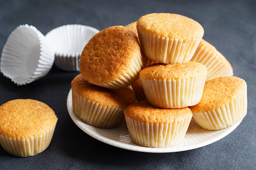

Muffins för stora och små
Vaniljmuffins

Ingredienser
- 4 dl vetemjöl
- 3 dl socker
- 2 1/2 dl tsk bakpulver
- 100 gram smör, rumstemperatur
- 2 dl mjölk
- 2 ägg
- 2 tsk vaniljsocker
- 1 tsk kanel
Gör så här:
- Sätt ungen på 175°
- Sikta ihop mjöl, socker, bakpulver och salt i en bunke tillsammans med smöret
- Slå på en dl av mjölk och rör smeten slät
- Vispa resterande mjölken, tillsammans med äg och vaniljsocker i en annan bunke
- Blanda ner äggblandningen i smeten
- Rör om smeten och tillsätt kanelen
- Häll upp i muffinsformer
- Grädda i ungnen i ca 20-25 minuter